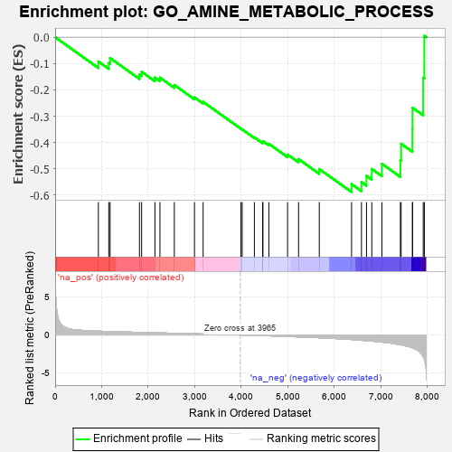
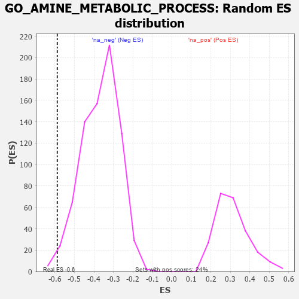

| | | Dataset | 7d |
| Phenotype | NoPhenotypeAvailable |
| Upregulated in class | na_neg |
| GeneSet | GO_AMINE_METABOLIC_PROCESS |
| Enrichment Score (ES) | -0.58769614 |
| Normalized Enrichment Score (NES) | -1.5997791 |
| Nominal p-value | 0.010484928 |
| FDR q-value | 0.09478071 |
| FWER p-Value | 1.0 |
Table: GSEA Results Summary

Fig 1: Enrichment plot: GO_AMINE_METABOLIC_PROCESS
Profile of the Running ES Score & Positions of GeneSet Members on the Rank Ordered List
| PROBE | GENE SYMBOL | GENE_TITLE | RANK IN GENE LIST | RANK METRIC SCORE | RUNNING ES | CORE ENRICHMENT | | 1 | PDE1B | | | 929 | 0.500 | -0.0923 | No |
| 2 | PSMD7 | | | 1152 | 0.454 | -0.0979 | No |
| 3 | PSMD2 | | | 1181 | 0.450 | -0.0792 | No |
| 4 | PSMD4 | | | 1811 | 0.335 | -0.1419 | No |
| 5 | PSMD6 | | | 1858 | 0.326 | -0.1316 | No |
| 6 | PSME4 | | | 2143 | 0.285 | -0.1533 | No |
| 7 | PSMF1 | | | 2251 | 0.268 | -0.1536 | No |
| 8 | PSMD5 | | | 2560 | 0.218 | -0.1816 | No |
| 9 | AZIN2 | | | 2993 | 0.150 | -0.2285 | No |
| 10 | PSMD9 | | | 3179 | 0.125 | -0.2457 | No |
| 11 | VPS35 | | | 3989 | -0.006 | -0.3472 | No |
| 12 | HDC | | | 4018 | -0.011 | -0.3502 | No |
| 13 | PSME3 | | | 4280 | -0.056 | -0.3803 | No |
| 14 | GDPD1 | | | 4458 | -0.086 | -0.3984 | No |
| 15 | GCDH | | | 4463 | -0.087 | -0.3946 | No |
| 16 | PNKD | | | 4591 | -0.116 | -0.4049 | No |
| 17 | AOC1 | | | 4993 | -0.197 | -0.4456 | No |
| 18 | SARDH | | | 5229 | -0.252 | -0.4628 | No |
| 19 | PSMD1 | | | 5674 | -0.367 | -0.5006 | No |
| 20 | ACMSD | | | 6367 | -0.603 | -0.5580 | Yes |
| 21 | CLN3 | | | 6580 | -0.699 | -0.5501 | Yes |
| 22 | SAT1 | | | 6688 | -0.756 | -0.5263 | Yes |
| 23 | KYNU | | | 6802 | -0.816 | -0.5003 | Yes |
| 24 | DDC | | | 7019 | -0.950 | -0.4806 | Yes |
| 25 | TPH1 | | | 7416 | -1.286 | -0.4671 | Yes |
| 26 | KMO | | | 7432 | -1.308 | -0.4044 | Yes |
| 27 | CHDH | | | 7675 | -1.692 | -0.3514 | Yes |
| 28 | SAT2 | | | 7677 | -1.698 | -0.2678 | Yes |
| 29 | PSMD3 | | | 7907 | -2.887 | -0.1542 | Yes |
| 30 | PSMD8 | | | 7931 | -3.286 | 0.0050 | Yes |
Table: GSEA details [plain text format]

Fig 2: GO_AMINE_METABOLIC_PROCESS: Random ES distribution
Gene set null distribution of ES for GO_AMINE_METABOLIC_PROCESS